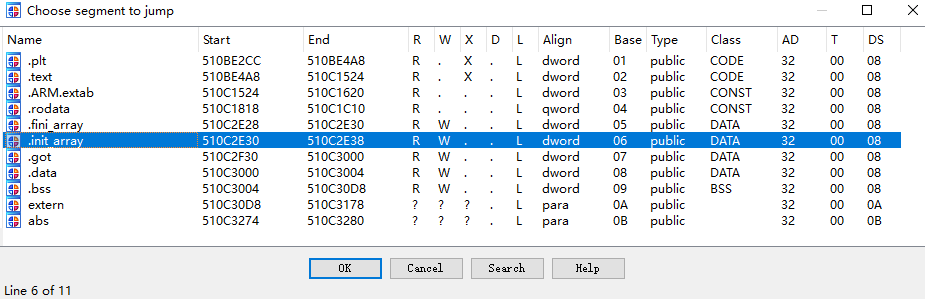
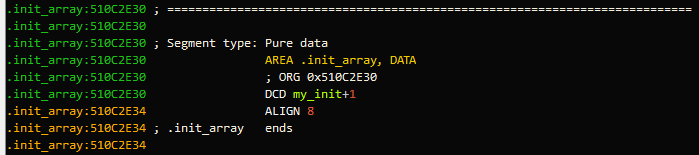
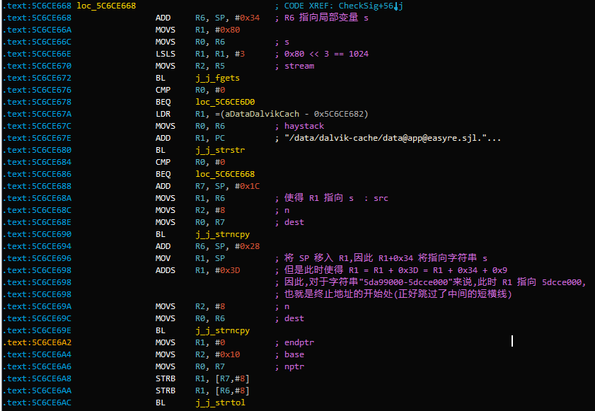
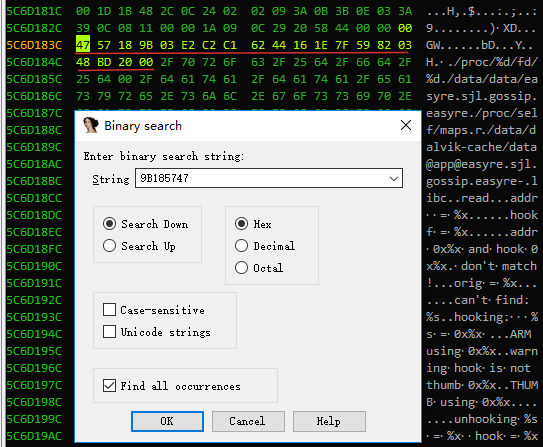
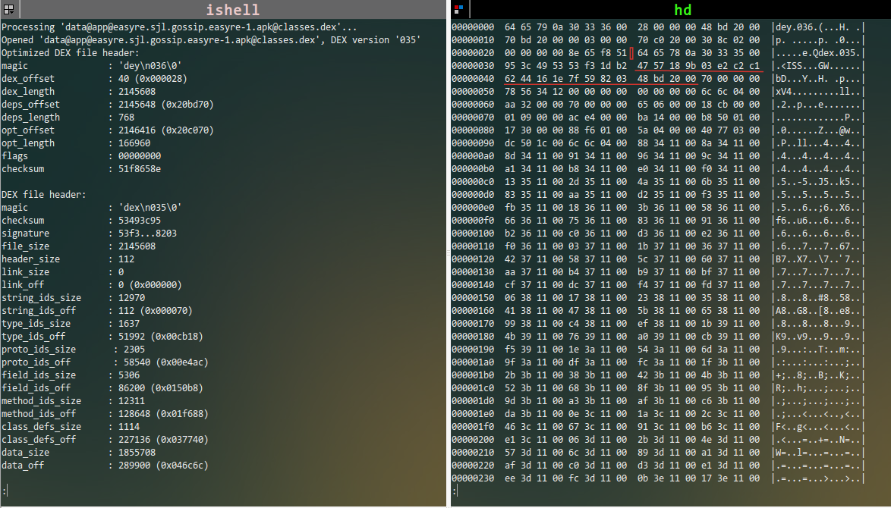
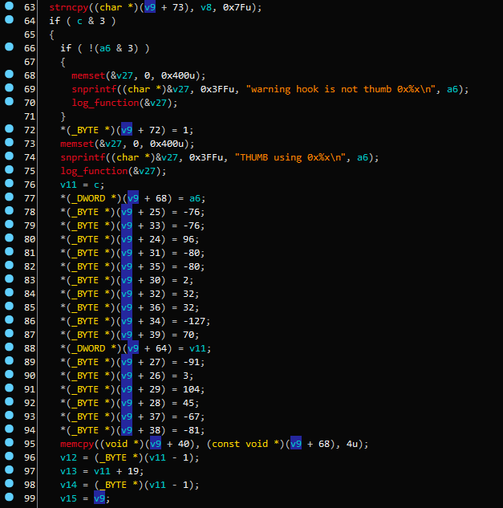
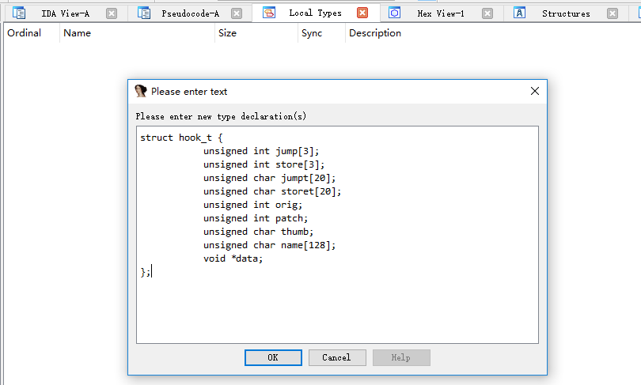
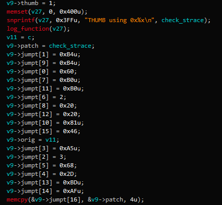

接着上文 partA-learn-smali 的分析, 这一节来分析相对底层的 so 库代码.
1.Ubuntu 16.04 x64 Host + Windows 10 x64 VMware + IDA Pro 6.8 + Android Phone 4.2
2.分析样本 simple.apk:下载.
上一部分我们详细分析了 smali 源码,然而实际分析中我们还是用工具直接反汇编成 java 代码看着比较方便快速,但是不是说 smali 就不重要了,我一直认为:只有内功深厚者,方能行得到远方. 我们不能因为工具的快捷而忘记了问题的本质.
为了方便分析,这是上一节中的 Java 代码如下:
void protected onCreate(Bundle p1)
{
System->loadLibrary("antidebug")
init()
super.onCreate(p1)
setContentView(R.layout.activity_easy_re)
this.bt1=(Button)findViewById(R.id.button)
this.iv1=(ImageView)findViewById(R.id.imageView)
this.et1=(EditText)findViedById(R.id.editText)
this.bt1.setOnClickListener(this)
return 0;
}
public void init()
{
const string filename = "flag.txt"
try
{
InputStream fin = this.getResources().openRawResource("flag.txt")
int length=fin.available();Byte[] buffer=new Byte[length];
fin.read(buffer)
FileOutputStream fout = openFileOutputStream(filename,0)
fout.write(buffer)
fin.close()
fout.close()
}catch
{
printStackTrace()
}
}
public void onClick(View p1)
{
View v = p1
const String filaName="flag.txt"
const String flag=""
try
{
FileInputStream fin = this.openFileInput("flag.txt")
int length=fin.avaible()
Byte[] buffer = new Byte[length]
fin.read(buffer)
if(getString(buffer,"UTF-8").equals(et1.getText().toString))
{
Toast.makeText(this.getApplicationContext(),"That\'s the flag!",0).show()
}
else
{
Toast.makeText(this.getApplicationContext(),"0ops!That\'s wrong!",0).show()
}
}catch
{
printStackTrace()
}
}
从 onCreate() 看起,先加载一个动态库 libantidebug.so,然后 init() 函数进行初始化(读flag.txt的内容再写入原内容,也就是说这个 init 函数实际上并没有什么卵用), 点击按钮时会读取 flag.txt 中的内容和输入文本进行比较.
flag.txt 中的内容为 0ctf{Too_Simple_Sometimes_Naive!!!} , 输入后提交,提示是不正确的.显然我们 Too young,Too Simple. 那还有什么可说的,显然最先加载的动态库 libantidebug.so 在背地里搞事情.我们怎么搞, 当然是把 libantidebug 扔到菜市场(IDA Pro)啦.
使用 apktool 可以很好的反编译该文件,其中的 AndroidManifest.xml 中已经有了android:debuggable="true" 标签, 因此我们就不用修改什么了.直接原 apk 上 IDA Pro动态调试即可.一般的我们都会开两个 IDA, 一个用于动态分析,一个用于静态分析.根据 so 库的加载流程,我们知道如果 so 库有初始化函数时, linker 将会首先执行 so 库中的初始化函数,将 libantidebug.so 载入 IDA Pro, Ctrl + S 打开段选择窗口:
点击进入后,我们发现如下代码:
显然,在 .init_array 段看到一个函数 my_init, 这个就是 so 最先执行的函数,我们在动态调试时,就在这个函数下断点.我们先来看一下这个代码做了什么:
_int64 my_init()
{
int pid; // r0@3
__int64 v1; // ST00_8@3
j_j_set_logfunction(nullsub_2);
// 签名校验
if ( CheckSig() ) j_j_exit(0);
pid = j_j_getpid();
// ???
// pid
// libc
// read
// SP:CheckStrace
// SP+4:CheckPtrace
// SP+8:0
j_j_hook(&unk_510C3004, pid, "libc.", "read", CheckStrace, CheckPtrace, 0);
return v1;
}
它主要包含了两个函数, CheckSig()和hook(), 从名字上看,我们可以知道该 so 库的大致逻辑是,先检验签名,如果签名不正确,就直接退出. 在签名正确的条件下,对 libc 中的 read 函数继续 hook 操作. hook 函数中的 CheckStrace, CheckPtrace 似乎是反调试的,不过这都是我们的初步猜想.接下来的两节我将详细的分析这两个函数.
现在让我们进入这个函数的内部一探究竟,
FILE *CheckSig()
{
v15 = _stack_chk_guard;
v4 = 0x9B185747;
v5 = 0xC1C2E203;
v6 = 0x1E164462;
v7 = 0x382597F;
v8 = 0x20BD48;
result = j_j_fopen("/proc/self/maps", "r");
MapsFile = result;
if ( result )
{
do
{
if ( !j_j_fgets(&s, 1024, MapsFile) )
{
LABEL_8:
j_j_fclose(MapsFile);
result = 0;
goto LABEL_9;
}
}
while ( !j_j_strstr(&s, "/data/dalvik-cache/data@app@easyre.sjl.gossip.easyre-") );
j_j_strncpy(&dexbeg, &s, 8u);
j_j_strncpy(&dexend, &v14, 8u);
v10 = 0;
v12 = 0;
dexbegA = j_j_strtol(&dexbeg, 0, 16);
v3 = (dexbegA + 0x38);
while ( *v3 == *(&v4 + v3 - dexbegA - 0x38) )
{
++v3;
if ( v3 == (dexbegA + 0x4C) )
goto LABEL_8;
}
result = 1;
}
LABEL_9:
if ( v15 != _stack_chk_guard )
j_j___stack_chk_fail(result);
return result;
}
前面的 v4 ~ v8 刚开始看的是一头雾水,不知道是做什么的,不过我们不用管,稍后就会知道了. 我们知道, /proc/$pid/maps中保存有 pid 为 $pid 的进程的内存布局, 特别的当 $pid 为 self 时,将会读取当前进程的内存布局.因此, 首先调用 fopen 打开自身的内存空间布局文件.然后每次读一行(1024 个字节足以包含一行了), 读到包含有字符串 /data/dalvik-cache/data@app@easyre.sjl.gossip.easyre-的行便停止读取. 读取停止后, s中便包含了当前行,当前行长什么样呢,我们可以用如下命令来查看;
adb shell ps | grep easyre
u0_a144 14193 2115 485632 19176 ffffffff 00000000 t easyre.sjl.gossip.easyre
这条命令可以让我们知道该进程的 pid 为 14193.然后通过该 pid 读取该进程的内存布局并过滤出我们需要内容.如下:
adb shell su 0 cat /proc/14193/maps | grep /data/dalvik-cache/data@app@easyre.sjl.gossip.easyre-
5da99000-5dcce000 r--p 00000000 b3:1d 17256 /data/dalvik-cache/data@app@easyre.sjl.gossip.easyre-1.apk@classes.dex
所以此时 s 字符串的值即为上述输出. so 库中接着用两个 strncpy 来 取得 s[0,7],s[9,17],也就是 dex 在内存中的始末位置:5da99000 和 5dcce000. 不过我们看 IDA 的反汇编代码会有一些小疑惑, v14 是什么鬼? 这里 IDA 没能识别出 v14 是什么, 怎么办,看汇编代码,详细注解已经标记在图3中:
dex 在内存中的始末地址获得后,还是字符串的形式,需要转换为整形变量,因此调用了strtol 函数来完成这一过程. 我们也能看到实际上终止地址并没有用到,所以在这里这个变量其实是没有什么用的. 然后就开始比较签名了,如下所示:
v3 = (dexbegA + 0x38); v3 = (dexbegA + 0x38);
while ( *v3 == *(&v4 + v3 - dexbegA - 0x38) ) while ( *v3 == *(&v4) )
{ {
++v3; ++v3;
if ( v3 == (dexbegA + 0x4C) ) goto LABEL_8; if ( v3 == (dexbegA + 0x4C) ) return 0;
} }
上述右边的代码是我略微简化了一下的版本.这里 v4 就开始发挥作用了.我们可以看到这个 while 循环是从 v4 变量所在的地址空间开始,一个一个字节比较,一共比较 0x4C - 0x38 = 20 个字节. 另外可以看到这里 v4 的值是内置的,因此我们搜索它在内存中的位置,按下 alt + b, 如下图4输入 v4 的值进行搜索:
我们一看,这家伙,v4,v5,v6,v7 其实是连着的,因此可以得知,它们合在一起构成了 20 字节 的内置签名.所获取的实际的程序签名存在 v3 中,v3 指向 dex 偏移 0x38 处,问题又来了,为什么是 0x38? 我们知道一个正常的 DEX 其签名位于 DEX 头偏移 0x12 处,这里怎么是 0x38? 实际上在内存中 的这个 DEX 为 ODEX,也就是优化了的 DEX.使用 NDK 自带的 dexdump 可以查看 dex 的头结构,如下图5所示:
显然 ODEX 大体上就是在 DEX 上包装了一个 ODEX 头(当然还有一个 ODEX 尾部),然后中间 是经过优化了的原 DEX. 在 ODEX 头部中有一个 dex_offset 字段指明了 DEX 头的偏移为 0x28, 这里的签名取了原 DEX 中 signature 的后 16 个字节(DEX 的 signature 为 SHA1 校验值, 共20 字节)以及 DEX 大小字段(4字节),共 20 字节作为签名. 所以有 0x38 = dex 头偏移 + dex magic + checksum + 0x4 = 0x28 + 0x8 + 0x4 + 0x4 = 0x38.这就是 0x38 的来历. CheckSig 函数在校验成功后返回 0,校验失败后返回1然后退出.这样 CheckSig 就算是分析完了.
我们可以看到 hook 的调用如下:
j_j_hook(&unk_5C6D3004, pid, "libc.", "read", CheckStrace, CheckPtrace, 0);
其中有两个函数 CheckStrace,CheckPtrace ,实际上 CheckStrace 间接调用了CheckPtrace,所以这两个大可认为是一个函数了. 这个函数分析了挺长时间,然而进展并不是很大,直到后来, 我发现它特么居然用的是一个 hook 框架 adbi, 而且特么的基本上没有改什么代码,直接把例子程序照搬过来了.
实际上我们并不需要读懂 adbi 的源代码,我们只需要知道怎么用就能很好的分析这个函数了. 上面的 hook 函数中,第一个参数为一个 hook_t 结构,用于保存一些 hook 信息, pid就是要钩取的进程 pid,紧接着的两个参数 libc,read 就是说我要钩取的是该进程中 libc 的 read 函数, 钩取完的 read 函数用谁来代替呢?用 CheckStrace,CheckPtrace 来代替, CheckStrace 为 ARM 指令体系,CheckPtrace 应为 Thumb 指令体系,两者应实现同样的功能.
在 adbi 的源码中,我们可以看到 hook 的声明如下:
int hook(struct hook_t *h, int pid, char *libname, char *funcname, void *hook_arm, void *hook_thumb);具体地说,它对库 libname 中的函数 funcname 进行 hook,使用我们的 hook_arm 或者 hook_thumb 函数来代替. hook_arm 和 hook_thumb 是同样功能的函数,只是一个是以 arm 实现,一个是以 thumb 实现.
以此题为例来说一下 adbi 的大致原理,hook 函数会对 read 函数进行钩取,修改 read 函数调用前的指令(具体来说就是加入跳转指令), 使得当调用 read 时可以自动跳转到我们自己定义的函数处.
但是有时候我们希望能够在自定义的函数中正常执行原函数,其处理方法是在我们自定义的函数中使用 hook_precall 和 hook_postcall, hook_precall 将恢复 read 函数调用前的指令,因此 hook_precall 调用后,其后再调用 read 函数, 将会正常的执行原本的 read 函数,执行完后,我们可以自定义一些自己的逻辑,然后再调用 hook_postcall, 那么再之后,每调用 read 函数,将会自动跳转到我们自定义的函数中进行执行.
现在,我们可以很明确地知道,主要任务就是分析 CheckPtrace.这里涉及到另一个问题, CheckPtrace 的参数应该为什么?答:一般情况下,和被 hook 的函数参数一致.
ChecckPtrace 的代码如下:
int __fastcall CheckPtrace(int fd, int readbuf, int count)
{
v3 = readbuf;
cnt = count;
fdno = fd;
v15 = _stack_chk_guard;
j_j_memcpy(dest, enc_flag, 0x23);
libc_read = plibc_read;
j_j_hook_precall(&unk_5C6D3004)
v11 = libc_read(fdno, v3, cnt);
pid = j_j_getpid();
j_j_snprintf(&fnopath, 0xFFu, "/proc/%d/fd/%d", pid, fdno);
j_j_memset(buf, 0, 0x100u);
j_j_readlink(&fnopath, buf, 0xFFu);
v7 = j_j_strstr(buf, "/data/data/easyre.sjl.gossip.easyre");
i = 0;
if ( v7 )
{
while ( i != cnt )
{
v3[i] ^= dest[i];
++i;
}
}
j_j_hook_postcall(&unk_5C6D3004);
result = v11;
if ( v15 != _stack_chk_guard )
j_j___stack_chk_fail(v11);
return result;
}
fd 是从 java 层传来的文件描述符,也就是 flag.txt,readbuf 将会存最终的 flag, count就是读取的字符数目.按照 linux 中 read 函数来解读这些参数就可以. 该函数首先将 enc_flag 拷贝了 0x23 个字节到 dest 中,然后调用 hook_precall, 这使得 read 函数可以正常工作, 因此读取了 flag.txt 中的字符串 0ctf{Too_Simple_Sometimes_Naive!!!} 到 v3 中, 然后通过一个循环来依次逐字节抑或 v3 和 dest, 解密得到真实的 flag. 结果存放在 v3 中(也就是readbuf中),最终会返回到 java 层. 最后的 hook_postcall 恢复对 read 函数的钩取,以便下次输入时仍然能够正常钩取. 解密方法就很简单了,将 enc_flag 拷贝出来,上 Python:
enc_flag = [0, 0, 0, 0, 0, 0x1D, 0x1B, 0x48, 0x2C, 0xC, 0x24, 2, 2, 9, 0x3A, 0xB, 0x3B, 0xE, 3, 0x3A, 0x39, 0xC, 8, 0x11, 0, 0, 0x1A, 9, 0xC, 0x29, 0x20, 0x58, 0x44, 0, 0]
explicit_flag = list("0ctf{Too_Simple_Sometimes_Naive!!!}")
for i in range(0x23):
print(chr(enc_flag[i] ^ ord(explicit_flag[i])),end = '')
输出结果为 0ctf{It's_More_Than_Meets_The_Eye!}
这样的话,这个函数便算是分析完了.当我们去看反汇编后的 hook 代码时,看到的是这样的:
现在我们知道了 v9 实际上为一个 hook_t 结构(或者说,我们分析后得知v9应该为某个结构体 ),那么我们怎么来告诉 IDA 呢? 这么搞. 在 IDA 中依次 View/Open Subviews/Local Types打开本地类型窗口, 鼠标右键选择插入,在打开的窗口中输入 hook_t 的结构,然后确定,如下图7所示:
然后找到 v9,按下 y ,将其类型重新设置为 hook_t*,结果就变成了图8这样:
现在又有另一个问题,为什么要钩取 libc 中的 read 函数呢?很好!让我们追踪溯源一次吧.
从 Java 层来看,函数调入口在于 FileInputStream 这个类.那就从这个类入手. 我用的 Android 源码为 android-5.1.1_r6. FileInputStream.java 位于 android-5.1.1_r6/libcore/luni/src/main/java/java/io/FileInputStream.java, 可以看到有两个read函数:
@Override public int read() throws IOException {
return Streams.readSingleByte(this);
}
@Override public int read(byte[] buffer, int byteOffset, int byteCount) throws IOException {
return IoBridge.read(fd, buffer, byteOffset, byteCount);
}
但是这里调用的read方法是这样的:
FileInputStream fin = openFileInput("flag.txt");
byte[] buffer = new byte[fin.available()];
int read = fin.read(buffer);
flag = EncodingUtils.getString(buffer, "UTF-8");
那么这 read(buffer) 只有一个参数的 read 是来自哪里的呢?来自其父类: InputStream. 和FileInputStream.java 同目录有一个 InputStream.java,打开该文件,我们可以看到确实有这个方法:
public int read(byte[] buffer) throws IOException {
return read(buffer, 0, buffer.length);
}
它内部调用了 read(buffer, 0, buffer.length); 这个方法由于在 FileInputStream 中实现了, 因此自然而然的就会调用 FileInputStream 中的该方法,查看 FileInputStream 可知,调用了 IoBridge.read(fd, buffer, byteOffset, byteCount); IOBridge 在哪里呢?查看头部导入有import libcore.io.IoBridge; 因此可以很方便的使用源码中自带的工具 godir找到该文件的位置:
godir libcore.io.IoBridge
其位置是 android-source-code/android-5.1.1_r6/libcore/luni/src/main/java/libcore/io/IoBridge.java,查看其中的 read 方法如下:
public static int read(FileDescriptor fd, byte[] bytes, int byteOffset, int byteCount) throws IOException {
Arrays.checkOffsetAndCount(bytes.length, byteOffset, byteCount);
if (byteCount == 0) {
return 0;
}
try {
int readCount = Libcore.os.read(fd, bytes, byteOffset, byteCount);
if (readCount == 0) {
return -1;
}
return readCount;
} catch (ErrnoException errnoException) {
if (errnoException.errno == EAGAIN) {
// We return 0 rather than throw if we try to read from an empty non-blocking pipe.
return 0;
}
throw errnoException.rethrowAsIOException();
}
}
它调用了 Libcore.os.read 函数,Libcore.java文件和 IoBridge 同目录,该文件很简单,如下:
public final class Libcore {
private Libcore() { }
public static Os os = new BlockGuardOs(new Posix());
}
它 new 了一个 Posix,查看 Posix.java 文件,类 Psix 实现了一个接口 Os(Os.java里面定义了许多要在native层实现的函数), 里面我们关心的代码如下:
public int read(FileDescriptor fd, byte[] bytes, int byteOffset, int byteCount) throws ErrnoException, InterruptedIOException {
// This indirection isn't strictly necessary, but ensures that our public interface is type safe.
return readBytes(fd, bytes, byteOffset, byteCount);
}
private native int readBytes(FileDescriptor fd, Object buffer, int offset, int byteCount) throws ErrnoException, InterruptedIOException;
再来看 BlockGuardOs.java 文件中的: read(fd, bytes, byteOffset, byteCount)方法:
@Override public int read(FileDescriptor fd, byte[] bytes, int byteOffset, int byteCount) throws ErrnoException, InterruptedIOException {
BlockGuard.getThreadPolicy().onReadFromDisk();
return os.read(fd, bytes, byteOffset, byteCount);
}
它实际上调用了 Posix 中的 read函数,最终还是调用了 Posix 中定义的 native 方法readBytes. 接下来我们需要知道这些 native 具体在哪里实现了,一般的实现文件名称是: libcore_io_Posix(就是将libcore.io.Posix中的点换成下划线) 我们使用下面命令转到:
godir libcore_io_Posix
如果不行,可以使用 cgrep Posix 来查找,但是这样输出会很多也会有点慢.打开该文件我们找到 readBytes 函数如下:
static jint Posix_readBytes(JNIEnv* env, jobject, jobject javaFd, jobject javaBytes, jint byteOffset, jint byteCount) {
ScopedBytesRW bytes(env, javaBytes);
if (bytes.get() == NULL) {
return -1;
}
return IO_FAILURE_RETRY(env, ssize_t, read, javaFd, bytes.get() + byteOffset, byteCount);
}
里面有一个预定义宏 IO_FAILURE_RETRY ,它的定义如下:
#define IO_FAILURE_RETRY(jni_env, return_type, syscall_name, java_fd, ...)
简单的来说,它就是封装了对linux系统函数的调用,封装的系统函数名为第三个参数 syscall_name, 返回值类型为 return_type,参数为函数名之后的所有的所有变量. 因此最终在宏 IO_FAILURE_RETRY 中调用了 linux 的 read 函数.